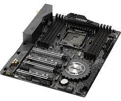

Placa base
Descripción
La placa base, también conocida como tarjeta madre, placa madre o placa principal (motherboard o mainboard en inglés), es una tarjeta de circuito impreso a la que se conectan los componentes que constituyen la computadora. Es una parte fundamental para montar cualquier computadora personal de escritorio o portátil o algún dispositivo. Tiene instalados una serie de circuitos integrados, entre los que se encuentra el circuito integrado auxiliar (chipset), que sirve como centro de conexión entre el microprocesador (CPU), la memoria de acceso aleatorio (RAM), las ranuras de expansión y otros dispositivos.
Procesador
Descripción
La unidad central de procesamiento CPU (conocida por las siglas CPU, del inglés Central Processing Unit) o procesador es un componente del hardware dentro de un computador, teléfonos inteligentes y otros dispositivos programables.Su trabajo es interpretar las instrucciones de un programa informático mediante la realización de las operaciones básicas aritméticas, lógicas y externas (provenientes de la unidad de entrada/salida). Su diseño y avance ha variado notablemente desde su creación, aumentando su eficiencia y potencia, y reduciendo aspectos como el consumo de energía y el costo.